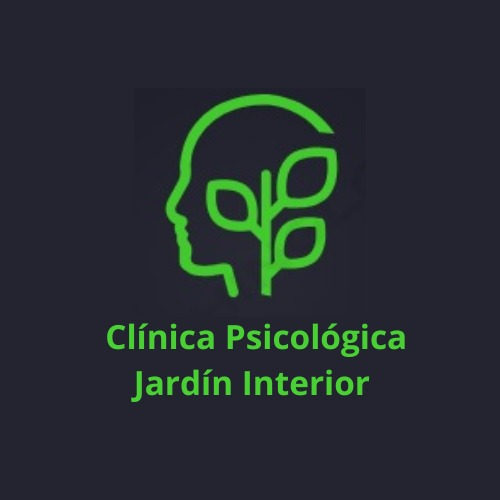
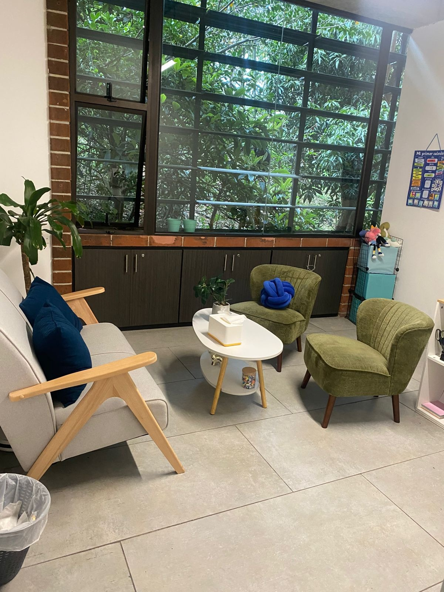

Acompañamos el bienestar emocional y el desarrollo integral de tu familia
En Clínica Psicológica Jardín Interior brindamos atención especializada para niños, adolescentes y adultos, ofreciendo un espacio seguro, humano y profesional para crecer, sanar y fortalecer el bienestar emocional.


Un espacio seguro para crecer, aprender y sanar
En Clínica Psicológica Jardín Interior trabajamos con niños, adolescentes, adultos y familias, ofreciendo acompañamiento psicológico profesional desde una atención cálida, ética y personalizada.
Creemos en la importancia de atender tanto el bienestar emocional como el desarrollo integral de cada persona, fortaleciendo habilidades emocionales, familiares, cognitivas y sociales.
Nuestro objetivo es brindar herramientas que permitan afrontar dificultades, potenciar capacidades y construir una vida con mayor equilibrio y bienestar.
- eco Atención cálida, ética y personalizada
- diversity_3 Niños, adolescentes, adultos y familias
- psychology Enfoque integral basado en la evidencia
Nuestros Servicios Principales
Atención especializada en cada etapa de la vida, con un enfoque que integra el bienestar emocional y el desarrollo personal.
Estimulación Temprana
Acompañamos el desarrollo infantil mediante actividades especializadas que fortalecen habilidades cognitivas, motoras, sociales y del lenguaje durante los primeros años de vida.
AGENDAR CITATerapia Psicológica Infantil
Apoyo emocional a niños con dificultades conductuales, emocionales, escolares o de adaptación, trabajando junto a sus familias.
Terapia para Adolescentes
Identidad, autoestima, ansiedad y cambios propios de la adolescencia.
Terapia Familiar
Fortalecemos la comunicación y las relaciones para afrontar conflictos juntos.
Terapia de Pareja
Acompañamiento para mejorar la comunicación, resolver conflictos y fortalecer el vínculo afectivo.
Tutorías de Lectura y Escritura
Apoyo especializado para niños de 6 a 8 años.
Acompañamos en diversas áreas del bienestar
Abordamos un amplio espectro de necesidades emocionales y del desarrollo, adaptando cada proceso a la persona y su entorno.
Atención integral con enfoque humano y profesional
Nuestro trabajo combina herramientas psicológicas basadas en evidencia con un acompañamiento cercano y respetuoso.
Cada proceso terapéutico es personalizado, considerando las necesidades emocionales, familiares y del desarrollo de cada paciente.
Creemos que la salud mental y el desarrollo infantil deben abordarse desde la empatía, la comprensión y el fortalecimiento de recursos personales y familiares.
Basado en Evidencia
Herramientas psicológicas con respaldo científico.
Acompañamiento Cercano
Atención cálida y respetuosa en cada sesión.
Procesos Personalizados
Adaptados a cada paciente y su contexto.
Mirada Integral
Emocional, familiar y del desarrollo.
Atención presencial y en línea
Elige la modalidad que mejor se adapte a tus necesidades, manteniendo siempre la calidad y cercanía de nuestro acompañamiento.
Atención Presencial
Te recibimos en un espacio diseñado para sentirte seguro: luz natural, vegetación y un ambiente cálido pensado para cada etapa de la vida.
event_available AGENDAR CITA PRESENCIALAtención en Línea
Sesiones virtuales con la misma calidad y cercanía, desde donde te sientas cómodo. Ideal para personas con agendas exigentes o desde otras ciudades.
videocam AGENDAR CITA VIRTUALDar el primer paso puede transformar tu bienestar
Estamos aquí para acompañarte en cada etapa del proceso emocional y del desarrollo de tu familia.